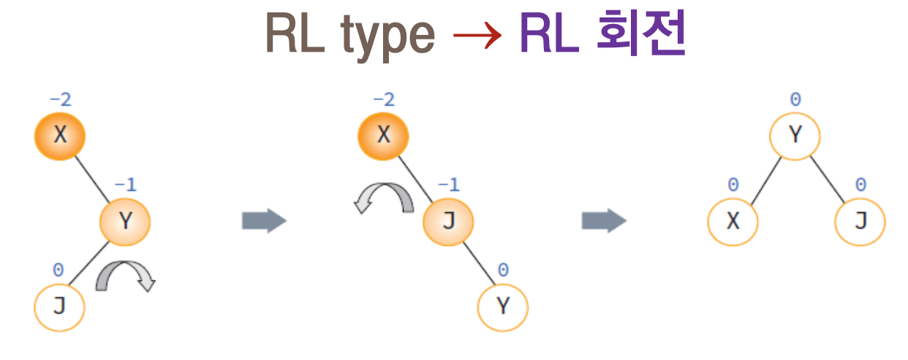

AVL 트리
2022/11/17(목요일)
AVL트리
AVL트리는 Adelson-Velskii와 Landis에 의해 1962년에 제안된 트리로서 각 노드에서 왼쪽 서브 트리의 높이와 오른쪽 서브 트리의 높이 차이가 1 이하인 이진 탐색 트리를 말한다.
AVL트리는 트리가 비 균형상태로 되면 스스로 노드들을 재배치하여 균형 상태로 만든다. 따라서 AVL트리는 균형 트리가 항상 보장되기 때문에 탐색이 O(logn)시간 안에 끝나게 된다. 또한 삽입과 삭제 연산도 O(logn)시간 안에 할 수 있다.
(a)는 모든 노드에서 양쪽 서브 트리의 높이의 차이가 1이하이다. 그러나 (b)는 노드 7에서 왼쪽 서브 트리의 높이가 2인 반명 오른쪽 서브 높이가 0이므로 균형을 이루지 못하고 따따라서 AVL트리가 아니다.
설명을 쉽게 하기 위하여 먼저 균형 인수를 먼저 정의하여 보자. 균형 인수는 왼쪽 서브트리의 높이 - 오른쪽 서브 트리의 높이로 정의된다. (a)는 모든 노드의 균형 인수가 +- 1 이하이기 때문에 AVL 트리이지만, (b)는 노드 5와 7이 균형 인수가 2이기 때문에 AVL트리가 아니다.
AVL 트리의 탐색 연산
AVL 트리도 탐색에서는 일반적인 이진 탐색 트리와 동일하다.
AVL 트리의 삽입 연산
균형을 이룬 이진 탐색 트리에서 균형 상태가 깨지는 것은 삽입 연산과 삭제 연산 시이다. 삽입 연산 시에는 삽입되는 위치에서 루트까지의 경로에 있는 조상 노드들의 균형 인수에 영향을 줄 수 있다. 따라서 즉 새로운 노드의 삽입 후에 불균형 상태로 변한 가장 가까운 조상 노드, 즉 균형 인수가 +-2가 된 가장 가까운 조상 노드의 서브 트리들에 대하여 다시 균형을 잡아야 한다.
그 외의 다른 노드들은 일체 변경할 필요가 없다. 예를 들어 위 그림 (a)는 균형을 이룬 AVL트리이다. 여기서 정수 1을 삽입하면 (b)처럼 노드 5와 노드 7이 균형 인수가 2가 되어 균형이 깨지게 된다. 따라서 여기서는 균형 인수가 2가 된 가장 까까운 조상 노드인 노드 5부터 그 아래에 있는 노드들을 다시 배치하여 균형 상태로 만들어야 한다.
삽입 연산시의 4가지 경우
어떻게 하면 균형이 깨진 트리를 다시 균형 있게 만들 수 있을까?
이를 해결하는 방법은 새로운 노드부터 균형 인수가 +-2가 된 가장 가까운 조상 노드까지를 회전시키는 것이다. 앞의 그림의 경우 노드 1, 3, 5를 오른쪽으로 회전시키면 다시 균형 트리가 된다. 단 다른 노드들은 변경 시키지 않음을 주의해야 한다.
AVL 트리에 새로운 노드를 추가하면 균형이 깨어질 수 있다. 이때는 트리를 부분적으로 회전하여 균형 트리로 되돌려야 한다. 균형이 깨지는 경우에는 위의 그림처럼 4가지 경우가 있다.
[LL 타입]
노드 Y의 왼쪽 자식의 왼쪽에 노드가 추가됨으로써 발생된다. 노드들은 오른쪽으로 회전시키면 된다.
[RR 타입]
노드 Y의 오른쪽 자식의 오른쪽에 노드가 추가됨으로써 발생된다. 노드들을 왼쪽으로 회전시키면 된다.
[RL 타입]

노드 Y의 오른쪽 자식의 왼쪽에 노드가 추가됨으로써 발생된다. RL타입은 균형 트리를 만들기 위하여 2번의 회전이 필요하다.
[LR 타입]
노드 X의 왼쪽 자식의 왼쪽에 노드가 추가됨으로써 발생한다. LR타입도 균형 트리를 만들기 위하여 2번의 회전이 필요하다.
AVL 트리의 예제
AVL 트리 구현
#include<stdio.h>
#include<stdlib.h>
#define MAX(a, b) (a)
// AVL 트리 노드 정의
typedef struct AVLNode
{
int key;
struct AVLNode *left;
struct AVLNode *right;
} AVLNode;
// 트리의 높이를 반환
int get_height(AVLNode *node)
{
int height = 0;
if (node != NULL)
height = 1 + max(get_height(node->left),
get_height(node->right));
return height;
}
// 노드의 균형인수를 반환
int get_balance(AVLNode* node)
{
if (node == NULL) return 0;
return get_height(node->left)
- get_height(node->right);
}
// 노드를 동적으로 생성하는 함수
AVLNode* create_node(int key)
{
AVLNode* node = (AVLNode*)malloc(sizeof(AVLNode));
node->key = key;
node->left = NULL;
node->right = NULL;
return(node);
}
// 오른쪽으로 회전시키는 함수
AVLNode *rotate_right(AVLNode *parent)
{
AVLNode* child = parent->left;
parent->left = child->right;
child->right = parent;
// 새로운 루트 반환
return child;
}
// 왼쪽으로 회전시키는 함수
AVLNode *rotate_left(AVLNode *parent)
{
AVLNode *child = parent->right;
parent->right = child->left;
child->left = parent;
// 새로운 루트 반환
return child;
}
// AVL 트리에 새로운 노드 추가 함수
// 새로운 루트를 반환한다.
AVLNode* insert(AVLNode* node, int key)
{
// 이진 탐색 트리의 노드 추가 수행
if (node == NULL)
return(create_node(key));
if (key < node->key)
node->left = insert(node->left, key);
else if (key > node->key)
node->right = insert(node->right, key);
else // 동일한 키는 허용되지 않음.
return node;
// 노드들의 균형인수 재계산
int balance = get_balance(node);
// LL 타입 처리
if (balance > 1 && key < node->left->key)
return rotate_right(node);
// RR 타입 처리
if (balance < -1 && key > node->right->key)
return rotate_left(node);
// LR 타입 처리
if (balance > 1 && key > node->left->key)
{
node->left = rotate_right(node->left);
return rotate_right(node);
}
// RL 타입 처리
if (balance < -1 && key < node->right->key)
{
node->right = rotate_right(node->right);
return rotate_left(node);
}
return node;
}
// 전위 순회 함수
void preorder(AVLNode *root)
{
if (root != NULL)
{
printf("[%d] ", root->key);
preorder(root->left);
preorder(root->right);
}
}
int main(void)
{
AVLNode *root = NULL;
// 예제 트리 구축
root = insert(root, 10);
root = insert(root, 20);
root = insert(root, 30);
root = insert(root, 40);
root = insert(root, 50);
root = insert(root, 29);
printf("전위 순회 결과 \n");
preorder(root);
return 0;
}